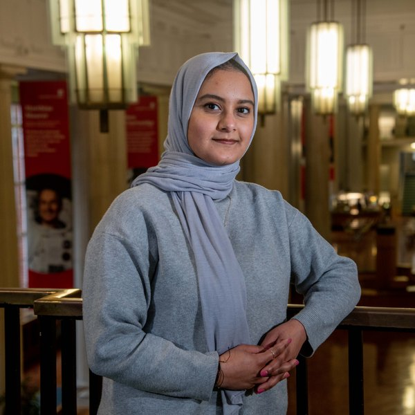
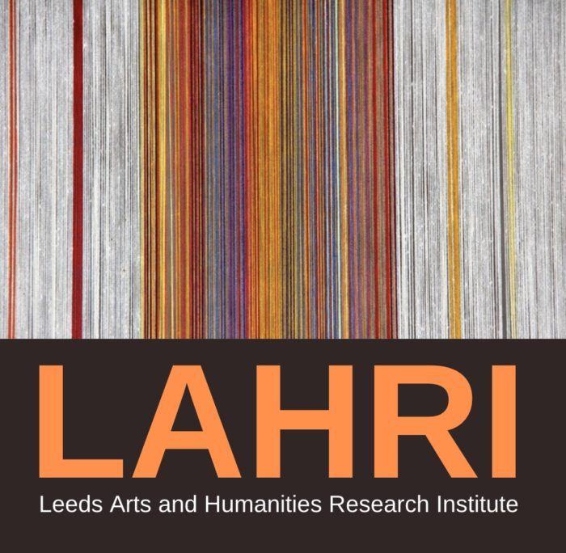

Who We Are
The Water, Public Health and Environmental Engineering (WPE) group in the School of Civil Engineering at the University of Leeds studies how water, air, waste, and energy move through buildings, cities, and catchments — and how those flows affect human health and the environment.
Founded on Leeds's long-standing tradition in tropical public health engineering and building aerobiology, WPE brings together 30 academic and research staff and more than 50 doctoral researchers working across four interconnected research themes: Indoor Air & Healthy Buildings, Water — Supply, Treatment & Resilience, Sanitation, Hygiene & Global Health, and BioResources, Waste & Circular Economy, underpinned by shared experimental, microbiological, computational, and social-science methods.
Our researchers play leading roles across the University's interdisciplinary institutes — including water@leeds (one of the world's largest university water research centres, led by Prof. Martin Tillotson), the Leeds Institute for Fluid Dynamics (LIFD), the Priestley Centre for Climate Futures, and two EPSRC Centres for Doctoral Training (WaterWISER and Future Fluid Dynamics).

Our Mission
To advance fundamental environmental engineering science and co-develop practical, low-carbon solutions for healthy indoor environments, resilient water and sanitation systems, and circular resource recovery through rigorous laboratory, computational, and field research.
Our Vision
A world where every community has equitable access to clean air, safe water, safely managed sanitation, and circular bioresource systems, supported by evidence-based engineering standards and public health policy.
Research That Changes Policy and Practice
Our research is designed alongside the people and institutions who use it — from hospital estates teams, water utilities, and local authorities in the UK to municipal utilities, ministries, and international agencies across Africa, South and Southeast Asia, and Latin America.

Mapping Unsafely Managed Sanitation Around the World
Co-developed by Prof. Barbara Evans and Prof. Andy Sleigh, the Shit Flow Diagram (SFD) is used in more than 100 cities worldwide, directly informed UN Sustainable Development Goal Target 6.2 ("safely managed sanitation"), and shaped over US$1.1 billion in urban sanitation investment.
Read Full Impact Case Study
Shaping National & International COVID-19 Guidance
Led by Prof. Cath Noakes OBE FREng (Chair of the SAGE Environment and Modelling Group) with Associate Professor Marco-Felipe King and Dr Louise Fletcher, two decades of Leeds aerobiology research underpinned UK Government, NHS, CIBSE, and WHO ventilation guidance.
Read Full Impact Case Study
Contributing to the Global Agenda
From WHO/UNICEF global sanitation monitoring and £1.75M Ayrton Challenge clean-cooling hubs in Uganda (BioCool) to UK school air-quality trials (Class-ACT) and circular economy policy for offshore wind, our work directly supports SDGs 3, 6, 7, 11, 12, and 13.
Explore BioCool ImpactMilestones in Our History
Leadership & Community Coordination

Associate Professor Marco-Felipe King

Associate Professor Amirul Khan

Bushra Hasan & Anushi Khandare
University Institutes & Research Centres


Contact Information
Location
Water, Public Health and Environmental Engineering Group
School of Civil Engineering
University of Leeds, Woodhouse Lane
Leeds, LS2 9JT, United Kingdom
General & Group Enquiries: m.f.king@leeds.ac.uk
School & Postgraduate Enquiries: civil@leeds.ac.uk
Office Hours
Monday – Friday: 09:00 – 17:00
Closed on weekends and University holidays